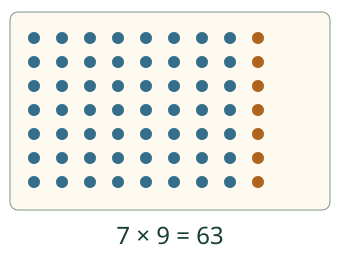
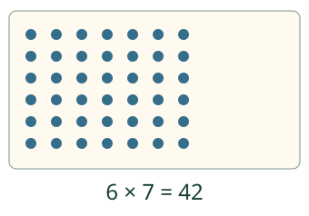

Loikan pisterivit.
Käytän tuttua kertolaskua uuden tulon löytämiseen.
Ilman JavaScriptiä: 7 × 8 = 56. Seitsemään riviin yksi lisää antaa 7 × 9 = 63. Voit käyttää myös suoraan muistamaasi vastausta.
Loikka tuntee yhden kertolaskun. Auttaako se löytämään naapurin? Alla oleva malli alkaa rivistöstä 7 × 8. Lisää malliin yksi sarake ja katso, kuinka monta pistettä tulee lisää.
Tutki naapurituloa tässä
Malli on ilman JavaScriptiä alkuperäisessä kohdassaan: avaa mallin kohta.
Tutusta tulosta uuteen
Yksi uusi sarake lisää yhden pisteen joka riville. Seitsemässä rivissä se lisää 7, ei vain yhtä.
7 × 8 auttaa laskussa 7 × 9

7 × 9 = 56 + 7 = 63. Myös 9 × 7 antaa 63. Tekijöiden vaihtaminen muuttaa rivistön suunnan, ei kokonaismäärää.
Mikä tekijä puuttuu?

Laskussa □ × 7 = 42 etsitään rivien määrää, ei koko tuloa. Viisi seitsemän riviä on 35. Vielä yksi seitsemän rivi antaa 42. Puuttuva tekijä on 6.
Mieti: miksei 7 × 9 ole 56 + 1?
Katso perustelu
Yksi lisätään jokaiseen seitsemään riviin. Uudessa sarakkeessa on seitsemän pistettä. Samoin 6 × 8 saadaan luvusta 6 × 9 = 54 poistamalla 6: tulos on 48.
Uusi tilanne: 8 riviä, 6 munapaikkaa joka rivissä. Montako paikkaa? Voit vastata alla munakennotehtävään. Et tarvitse kuvaa kaikista munista; mallin voi avata erikseen, jos haluat.
Avaa munakennotehtävä tähän
Malli on ilman JavaScriptiä alkuperäisessä kohdassaan: avaa mallin kohta.
Lisää tutkittavaa
Alla oleva malli alkaa rivistöstä 9 × 9. Vertaa tapoja 10 × 9 − 9 ja 9 × 8 + 9. Kumpikin antaa 81. Voit myös täydentää harjoituksen seitsemän taulua tai valita minkä tahansa tekijäparin 1–10.
Tutki mallia: 9 × 9
Malli on ilman JavaScriptiä alkuperäisessä kohdassaan: avaa mallin kohta.
Lopuksi: jos tiedät 8 × 7 = 56, miten löydät 8 × 6?
Opettajalle ja kertaus ilman ruutua
Luokat 3–6. Alemmat ja ylemmät kertotaulut ovat vaaditut esitiedot. Kaikki 100 järjestettyä tekijäparia 1–10 ovat valittavissa tulon tai puuttuvan tekijän harjoitukseen. Tämä ei tarkoita, että oppija olisi käynyt tai muistanut ne kaikki. Erota oikein päätelty vastaus, tuettu vastaus ja muistista haettu vastaus.
Peitä paperirivistön yksi sarake ja kysy, kuinka paljon tulosta poistui. Käytä lyhyitä, vaihtelevia harjoituksia myös myöhempinä päivinä; kysy laskutapaa tarvittaessa vapaaehtoisesti. Yksittäinen vastaus tai sarjan läpikäynti ei todista koko kertotauluston sujuvuutta, nopeaa muistihakua tai säilymistä. Mallin ohjaimet eivät ole vastaus. Ei aikarajaa, puhepakkoa, pistetaulukkoa tai oppilashistoriaa.